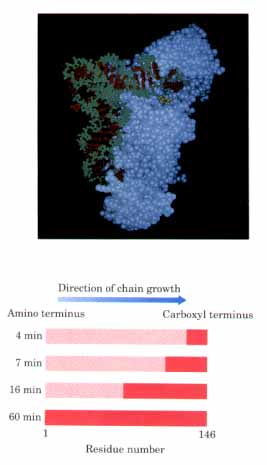
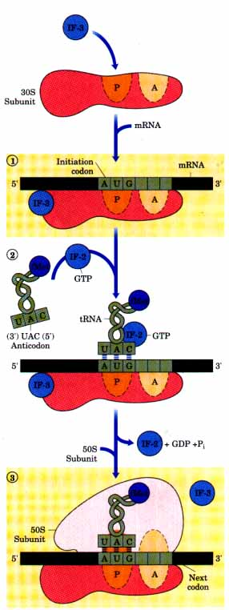
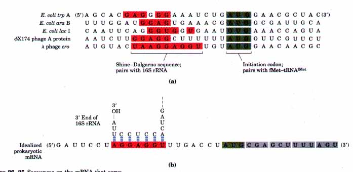
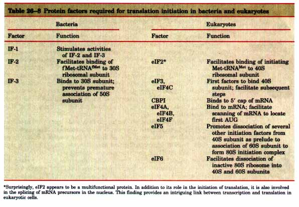
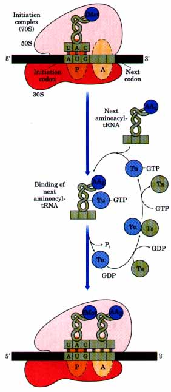
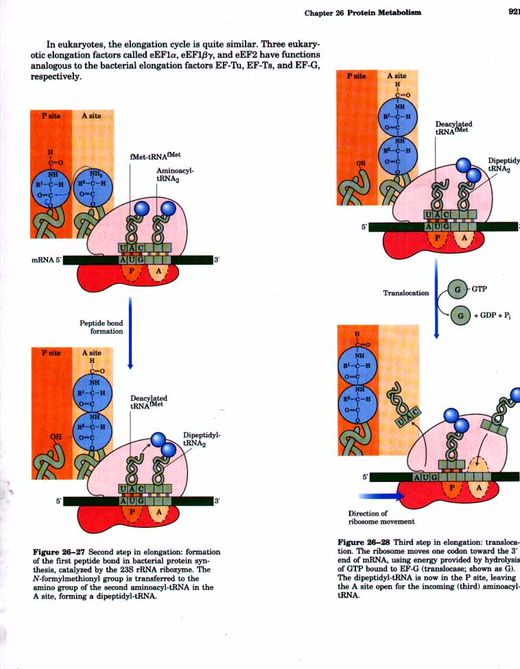

Met-tRNAfMet +
AMP + PP
Met-tRNAfMet +
AMP + PP Does polypeptide chain growth begin from the amino-terminal or from the carboxyl-terminal end? The answer came from isotope tracer experiments carried out by Howard Dintzis in 1961. Reticulocytes (immature erythrocytes) that were actively synthesizing hemoglobin were incubated with radioactive leucine. Leucine was chosen because it occurs frequently along both the α- and β-globin chains. Samples of completed a chains were isolated from the reticulocytes at various times after addition of radioactive leucine, and the distribution of radioactivity along the a chain was determined with the expectation that it would be concentrated in the end that was synthesized last. In those globin chains isolated after 60 min of incubation, nearly all the Leu residues were radioactive. However, in completed globin chains that were isolated only a few minutes after radioactive leucine was added, radioactive Leu residues were concentrated at the carboxyl-terminal end (Fig. 26-23). From these observations it was concluded that polypeptide chains are begun at the amino-terminal end and are elongated by sequential addition of residues to the carboxyl-terminal end. This pattern has been confirmed in innumerable additional experiments and applies to all proteins in all cells.
| Although there is only one codon for
methionine (AUG), there are two tRNAs for methionine in
all organisms. One tRNA is used exclusively when AUG
represents the initiation codon for protein synthesis.
The second is used when methionine is added at an
internal position in a polypeptide. In bacteria, the two separate classes of tRNA specific for methionine are designated tRNAMet and tRNAfMet. The starting amino acid residue at the amino-terminal end is N-formylmethionine. It enters the ribosome as N-formylmethionyl-tRNAfMet (fMet-tRNAfMet), which is formed in two successive reactions. Figure 26-23 Proof that polypeptide chains grow by addition of new amino acid residues to the carboxyl end. The dark red zones show the portions of completed a-globin chains containing radioactive Leu residues at different times after addition of labeled leucine. At 4 min, only a few residues at the carboxyl end of a-globin were labeled. This is because the only complete globin chains that contained label after 4 min were those that had nearly completed synthesis at the time the label was added. On longer times of incubation with labeled leucine, successively longer segments of the polypeptide chain contained labeled residues, always in a block at the carboxyl end of the chain. The unlabeled end of the polypeptide (the amino terminus) was thus defined as the initiating end, and the polypeptide chain grows by successive addition of amino acids at the carboxyl end.. |
Figure 26-22 Structure of Gln-tRNA synthetase (white) bound to its cognate tRNAGln(green and red) and ATP. The three phosphate groups of the ATP, shown in yellow, are visible. In this case, bases in both the anticodon arm and the amino acid arm are the key structural features of the tRNA used for recognition by the aminoacyl-tRNA synthetase. Additional contacts between the enzyme and the tRNA revealed in this crystal structure occur along the inside of the L structure of the tRNA (see Fig. 26-17), but many of these involve residues conserved in all tRNAs and may not contribute to discrimination among different tRNAs  |
First, methionine is attached to tRNAfMet by the Met-tRNA synthetase:
Methionine + tRNAfMet + ATP Met-tRNAfMet +
AMP + PP
As already noted, there is only one of these enzymes in E. coli, and it aminoacylates both tRNAfMet and tRNAMet. Second, a formyl group is transferred to the amino group of the Met residue from N10-Formyltetrahydrofolate by a transformylase enzyme:
N10-Formyltetrahydrofolate + Met-tRNAfMet
tetrahydrofolate + fMet-tRNAfMet
This transformylase is more selective than the Met-tRNA synthetase, and it cannot formylate free methionine or Met residues attached to tRNAMet. Instead, it is specific for Met residues attached to tRNAfMet ,presumably recognizing some unique structural feature of that tRNA. The other Met-tRNA species, Met-tRNAMet, is used to insert methionine in interior positions in the polypeptide chain. Blocking of the amino group of methionine by the N-formyl group not only prevents it from entering interior positions but also allows fMet-tRNAfMet to be bound at a specific initiation site on the ribosome that does not accept Met-tRNAMet or any other aminoacyl-tRNA.
In eukaryotic cells, all polypeptides synthesized by cytosolic ribosomes begin with a Met residue (as opposed to fMet), but again a specialized initiating tRNA is used that is distinct from the tRNAMet used at interior positions. In contrast, polypeptides synthesized by the ribosomes in the mitochondria and chloroplasts of eukaryotic cells begin with N-formylmethionine. This and other similarities in the proteinsynthesizing machinery of these organelles and bacteria strongly support the view that mitochondria and chloroplasts originated from bacterial ancestors symbiotically incorporated into the precursors of eukaryotic cells at an early stage of evolution (see Fig. 2-17).
We are now left with a puzzle. There is only one codon for methionine, namely (5' )AUG. How can this single codon serve to identify both the starting N-formylmethionine (or methionine in the case of eukaryotes) and those Met residues that occur in interior positions in polypeptide chains? The answer will be found in the next section.
| We now turn to a detailed examination of
the second stage of protein synthesis: initiation. The
focus here, and in the discussion of elongation and
termination to follow, is on protein synthesis in
bacteria; the process is not as well understood in
eukaryotes. The initiation of polypeptide synthesis in
bacteria requires (1) the 30S ribosomal subunit, which
contains 16S rRNA, (2) the mRNA coding for the
polypeptide to be made, (3) the initiating fMet-tRNAfMet,
(4) a set of three proteins called initiation factors
(IF-l, IF-2, and IF-3), (5) GTP, (6) the 50S ribosomal
subunit, and (7) Mg2+. The formation of the initiation
complex takes place in three steps (Fig. 26-24). In the first step, the 30S ribosomal subunit binds initiation factor 3 (IF-3), which prevents the 30S and 50S subunits from combining prematurely. Binding of the mRNA to the 30S subunit then takes place in such a way that the initiation codon (AUG) binds to a precise location on the 30S subunit (Fig. 26-24). |
 Figure 26-24 Formation of the initiation complex in three steps (described in the text) at the expense of the hydrolysis of GTP to GDP and Pi. IF-2 and IF-3 are initiation factors. P designates the peptidyl site, A the aminoacyl site. |

Figure 26-25 Sequences on the mRNA that serve as signals for initiation of protein synthesis in prokaryotes. (a) Alignment of the initiating AUG (shaded in green) in the P site depends in part on Shine-Dalgarno sequences (shaded in red) upstream. Portions of the mRNA transcripts of five prokaryotic genes are shown. (b) The ShineDalgarno sequences pair with a sequence near the 3' end of the 16S rRNA, as shown for an idealized prokaryotic mRNA.
The initiating AUG is guided to the correct position on the 30S subunit by an initiating signal called the Shine-Dalgarno sequence in the mRNA, centered 8 to 13 base pairs to the 5' side of the initiation codon (Fig. 26-25). Generally consisting of four to nine purine residues, the Shine-Dalgarno sequence is recognized by, and base-pairs (antiparallel) with, a complementary pyrimidine-rich sequence near the 3' end of the 16S rRNA of the 30S subunit. This mRNA-rRNA interaction f'fxes the mRNA so that the AUG is correctly positioned for initiation of translation. The specific AUG where fMet-tRNA~et is to be bound is thereby distinguished from interior methionine codons by its proximity to the Shine-Dalgarno sequence in the mRNA.
Ribosomes have two sites that bind aminoacyl-tRNAs, the aminoacyl or A site and the peptidyl or P site. Both the 30S and the 50S subunits contribute to the characteristics of each site. The initiating AUG is positioned in the P site, which is the only site to which fMettRNAtMet can bind (Fig. 26-24). However, fMet-tRNAfMet is the exception: during the subsequent elongation stage, all other incoming aminoacyl-tRNAs, including the Met-tRNAMet that binds to interior AUGs, bind to the A site. The P site is the site from which the "uncharged" tRNAs leave during elongation.
In the second step of the initiation process (Fig. 26-24), the complex consisting of the 30S subunit, IF-3, and mRNA now forms a still larger complex by binding IF-2, which already is bound to GTP and the initiating fMet-tRNAfMet. The anticodon of this tRNA pairs correctly with the initiation codon in this step.
In the third step, this large complex combines with the 50S ribosomal subunit; simultaneously, the GTP molecule bound to IF-2 is hydrolyzed to GDP and P; (which are released). IF-3 and IF-2 also depart from the ribosome.
A major difference in protein synthesis between prokaryotes and eukaryotes is the existence of at least nine eukaryotic initiation factors. One of these, called cap binding protein or CBPI, binds to the 5' cap of mRNA and facilitates formation of a complex between the mRNA and the 40S ribosomal subunit. The mRNA is then scanned to locate the first AUG codon, which signals the beginning of the reading frame. Several additional initiation factors are required. in this mRNA scanning reaction, and in assembly of the complete 80S initiation complex in which the initiating Met-tRNAMet and mRNA are bound and ready for elongation to proceed. The roles of the various bacterial and eukaryotic initiation factors in the overall process are summarized in Table 26-8. The mechanism by which these proteins act remains a very important area of investigation.

In bacteria, the steps in Figure 26-24 result in a functional 70S ribosome called the initiation complex, containing the mRNA and the initiating fMet-tRNAfMet. The correct binding of the fMettRNAfMet to the P site in the complete 70S initiation complex is assured by two points of recognition and attachment: the codon-anticodon interaction involving the initiating AUG fixed in the P site, and binding interactions between the P site and the fMet-tRNAfMet The initiation complex is now ready for the elongation steps.
The third stage of protein synthesis is elongation, the stepwise addition of amino acids to the polypeptide chain. Again, our discussion focuses on bacteria. Elongation requires (1) the initiation complex described above, (2) the next aminoacyl-tRNA, specified by the next codon in the mRNA, (3) a set of three soluble cytosolic proteins called elongation factors (EF-Tu, EF-Ts, and EF-G), and (4) GTP. Three steps take place in the addition of each amino acid residue, and this cycle is repeated as many times as there are residues to be added.
| In the first step of the elongation
cycle (Fig. 26-26), the next aminoacyl-tRNA is first
bound to a complex of EF-Tu containing a molecule of
bound GTP. The resulting aminoacyl-tRNA-EF-Tu.GTP complex
is then bound to the A site of the 70S initiation
complex. The GTP is hydrolyzed, an EF-Tu.GDP complex is
released from the 70S ribosome, and an EF-TU.GTP complex
is regenerated (Fig. 26-26). In the second step, a new peptide bond is formed between the amino acids bound by their tRNAs to the A and P sites on the ribosome (Fig. 26-27). This occurs by the transfer of the initiating N-formylmethionyl group from its tRNA to the amino group of the second amino acid now in the A site. The a-amino group of the amino acid in the A site acts as nucleophile, displacing the tRNA in the P site to form the peptide bond. This reaction produces a dipeptidyl-tRNA in the A site and the now "uncharged" (deacylated) tRNAfMet remains bound to the P site. The enzymatic activity that catalyzes peptide bond formation has historically been referred to as peptidyl transferase and was widely assumed to be intrinsic to one or more of the proteins in the large subunit. In 1992, Harry Noller and his colleagues discovered that this activity was catalyzed not by a protein but by the 23S rRNA, adding another critical biological function for ribozymes. As indicated in Chapter 25, this startling discovery has important implications for our understanding of the evolution of life on this planet. In the third step of the elongation cycle, called translocation, the ribosome moves by the distance of one codon toward the 3' end of the mRNA. Because the dipeptidyl-tRNA is still attached to the second codon of the mRNA, the movement of the ribosome shifts the dipeptidyl-tRNA from the A site to the P site, and the deacylated tRNA is released from the initial P site back into the cytosol. The third codon of the mRNA is now in the A site and the second codon in the P site. This shift of the ribosome along the mRNA requires EF-G (also called the translocase) and the energy provided by hydrolysis of another molecule of GTP (Fig. 26-28). A change in the three-dimensional conformation of the entire ribosome is believed to take place at this step in order to move the ribosome along the mRNA. |
 Figure 26-26 First step in elongation: the binding of the second aminoacyl-tRNA. The second aminoacyl-tRNA enters bound to EF-Tu(shown as 1ix), which also contains bound GTP. Binding of the second aminoacyl-tRNA to the A site in the ribosome is accompanied by hydrolysis of the GTP to GDP and P;, and an EF-Tu.GDP complex leaves the ribosome. The bound GDP is released when the EFTu.GDP complex binds to EF-Ts, and EF-Ts is subsequently released when another molecule of GTP becomes bound to EF-Tu. This recycles EF-Tu and permits it to bind another aminoacyl-tRNA. |
The ribosome, with its attached dipeptidyl-tRNA and mRNA, is now ready for another elongation cycle to attach the third amino acid residue. This process occurs in precisely the same way as the addition of the second. For each amino acid residue added to the chain, two GTPs are hydrolyzed to GDP and Pi. The ribosome moves from codon to codon along the mRNA toward the 3' end, adding one amino acid residue at a time to the growing chain.
The polypeptide chain always remains attached to the tRNA of the last amino acid to have been inserted. This continued attachment to a tRNA is the chemical glue that makes the entire process work. The ester linkage between the tRNA and the carboxyl terminus of the polypeptide activates the terminal carboxyl group for nucleophilic attack by the incoming amino acid to form a new peptide bond (as in Fig. 26-27). At the same time, this tRNA represents the only link between the growing polypeptide and the information in the mRNA. As the existing ester linkage between the polypeptide and tRNA is broken during peptide bond formation, a new linkage is formed because each new amino acid is itself attached to a tRNA.
